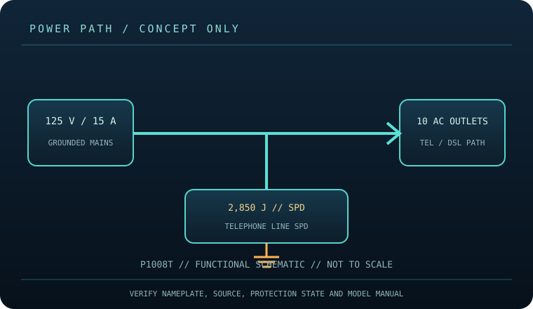

[ SURGE PROTECTIVE DEVICE // STATIC REFERENCE ]
CyberPower P1008T Surge Protector
Ten AC outlets, 2,850 J, 125 V / 15 A and 8 ft cord; model includes telephone-line protection. This record describes the named model only; verify nameplate, region, revision, approvals and current manufacturer instructions before deployment.

SAFETY SCOPE: Surge protective devices do not provide outage runtime, guarantee protection from every event, repair defective grounding, or replace qualified electrical installation. Capacity and topology below are based on the cited product literature; where a value is not published, it is not guessed.
Model specifications and topology
| Manufacturer / exact model | CyberPower P1008T — named North American model; revisions and region-specific suffixes must be checked on the actual label. |
|---|---|
| Class / topology | Cord-connected point-of-use surge strip with AC receptacle distribution, EMI/RFI filtering, overload protection and telephone-line suppression. No battery, inverter, transfer or outage runtime is provided. |
| Electrical capacity | 125 V AC, 15 A maximum; 10 AC outlets and an 8 ft cord. Maintain the combined load at or below the nameplate and branch circuit. Verify the precise outlet and phone-jack layout against the device revision. |
| Surge rating | CyberPower lists 2,850 J surge suppression for the P1008T. Joules are the manufacturer’s surge-energy rating, not continuous output wattage or remaining protection life. |
| Outlets / connection interface | Ten AC receptacles (standard and widely spaced positions) and model-specific RJ11 telephone/DSL line protection are listed. NEMA 5-15P cord, 8 ft. No coax or Ethernet protection is assumed unless the actual unit bears those labeled jacks. |
| Compatibility | For grounded 125 V North American equipment with compatible AC plugs, total current not exceeding 15 A. Route only the compatible phone/DSL line through the designated ports and observe IN/OUT markings; confirm supported service and connector type with the manual. |
| Battery / runtime | No battery or stored-energy runtime. This product cannot ride through an outage; connected loads lose power when the source or device disconnects. |
| Monitoring / lifecycle | Use only the model’s labeled indicators, alarm, breaker or status display. These features are not proof of building-ground integrity; check manufacturer replacement/failure instructions. |
| Installation / revision control | Read the full model-specific manual and nameplate before installation. Match voltage, phase, current, connector, signal-line type, enclosure rating, revision and approvals; similar product-family names are not evidence of interchangeability. |
Compatibility and application
For grounded 125 V North American equipment with compatible AC plugs, total current not exceeding 15 A. Route only the compatible phone/DSL line through the designated ports and observe IN/OUT markings; confirm supported service and connector type with the manual.
Cord-connected point-of-use surge strip with AC receptacle distribution, EMI/RFI filtering, overload protection and telephone-line suppression. No battery, inverter, transfer or outage runtime is provided.
Confirm the equipment input-voltage range, connector type, circuit capacity and signal path from both equipment manuals. A higher joule number does not increase the permissible connected load and does not, by itself, define clamping behavior or protection lifetime.
Safety, inspection and limits
- Do not exceed nameplate load, use a compromised ground, wet the product, block ventilation or daisy-chain it. Disconnect damaged or overheated equipment. Signal-line protection does not protect against all wiring paths or substitute for proper electrical grounding.
- Inspect cord, outlets, protection/ground indicators and housing routinely. Follow the exact P1008T manual for mounting, breaker and connected-equipment guidance. Retire a damaged unit or one reporting failed protection; it cannot power a load during an outage.
- Surge protection reduces specified transient exposure but cannot guarantee equipment survival from lightning, wiring faults, sustained overvoltage or every conducted path. Follow the model manual and applicable electrical code.
Manufacturer sources and safety references
- CyberPower — P1008T product specifications and downloadsManufacturer product page for the model’s 10-outlet, 2,850 J configuration.
- CyberPower — P1008T user manual (PDF resource)Official model manual covering setup, connections and safety.
- UL Solutions — Surge protective devicesOverview of SPD product safety/certification; confirm approval markings on the exact unit.